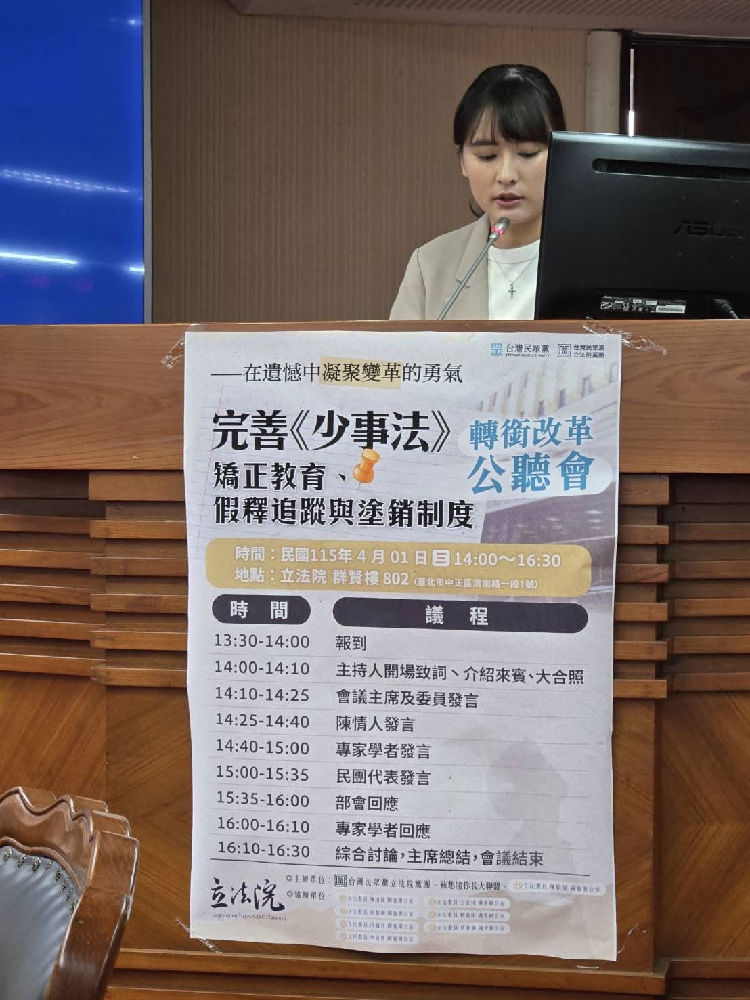

少事法矯正教育、假釋追蹤與塗銷制度如何改革？
30 秒掌握重點
- 核心觀點：國教行動聯盟主張少事法修法應兼顧教育優先與被害人權益，提出矯正教育法制化、假釋追蹤入法、塗銷制度分級、被害人表意權四大訴求。
- 關鍵數據：全國僅 4 所矯正學校、新北割頸案二審判 12 年定讞引發量刑爭議、國教盟提出超過 10 次公開聲明持續追蹤。
- 行動呼籲：要求司法院公開重大案件檢討報告，法務部、衛福部、教育部、警政署跨部會協力，落實資源到位與外部監督。
新北割頸案後，為什麼少事法修法成為社會焦點？
2023年12月25日，新北市某國中校園內發生震驚社會的割頸命案——一名國中生持彈簧刀刺殺同學致死。一審判處主嫌 9 年、共犯 8 年有期徒刑；二審改判 12 年及 11 年，最高法院於2025年12月24日駁回檢方上訴定讞[3]。被害學生家屬當庭痛哭，社會輿論普遍認為量刑過輕，也讓少年事件處理法的制度缺口成為修法焦點。
國教行動聯盟從案發後第二天即開始發聲，至今提出超過 10 次公開聲明[4]。根據國教盟2024年全國家長調查，「校園安全」高居家長最關心教育議題 第 2 名[5]。2024年9月，國教盟更前往立法院提出十大訴求請願書，呼籲全面檢視少事法的制度漏洞。2026年4月1日，國教盟青年部執行長李雨函受邀於立法委員陳昭姿召開的公聽會上正式發言，提出完整的條文修正建議。
此案也促使司法院啟動修法程序。2025年司法院通過的少事法修正草案中，首度引入「有條件塗銷」機制，將原本的自動塗銷改為三年觀察期內未再犯方能塗銷[2]。然而國教盟認為，僅以時間作為評量標準仍然不夠，必須依犯罪嚴重程度建立分級制度。
全國只有四所矯正學校，矯正教育為何需要法制化？
台灣目前僅有 4 所少年矯正學校：桃園敦品中學、新竹誠正中學、彰化勵志中學施行感化教育，高雄明陽中學施行有期徒刑[6]。這四所學校隸屬法務部矯正署、受教育部國教署指導，但教育資源與專業人力嚴重不足。現行少事法第42條規定的保護處分包括訓誡、保護管束、安置輔導及感化教育四種，然而感化教育作為最嚴厲的保護處分，其矯正功能長期飽受質疑。
國教盟在書面意見書中明確指出幾項制度缺口：感化教育缺乏明確的矯正目標與成效評估機制；少年在矯正學校中的教育內容與一般教育嚴重脫節；矯正教育與一般教育的轉銜機制不足，導致少年結束感化教育後復學困難。2019年修法後，少事法大幅限縮司法介入範圍，將重心從司法監督轉向行政輔導，但配套措施未臻完善。
國教盟具體建議：在少事法增訂第42條之1，明定個別化處遇計畫、每六個月進行成效評估；增訂第42條之2，建立教育部與法務部共同負責的轉銜辦法。觸犯最輕本刑五年以上者應進入專責矯正教育機構，教育期間不得少於兩年。同時檢討刑法第63條少年減刑規定，對於犯罪情節特別嚴重且再犯風險高者，法院應得不予減刑[1]。國際上，日本2022年修正少年法，將18至19歲列為「特定少年」並擴大可移送檢察官的對象犯罪範圍，嚴重案件甚至可以實名報導[7]，顯示各國都在重新檢視少年司法制度的平衡點。
假釋後追蹤為什麼會出現「斷裂」，如何建立分級制度？
現行少事法第81條允許少年在服刑逾三分之一後假釋，第82條規定假釋期間得付保護管束。但國教盟指出，實務上假釋後的追蹤存在五大缺陷：追蹤缺乏明確法定期間、缺乏獨立法源、矯正機關與社區處遇機關銜接不夠緊密、家庭功能重建不足，以及被害人在假釋審查中完全沒有表意權。
國教盟提出「分級追蹤」的完整架構。首先，假釋後社會輔導追蹤應正式入法，追蹤期不得少於 半年，涉及重大暴力犯罪者應延長至 1 年以上。其次，依據犯罪類型與再犯風險評估建立三級追蹤：高風險個案每月 2 次面訪加電子監控；中風險個案每月1次面訪；低風險個案每2個月1次電話訪視[4]。
在條文建議上，國教盟主張增訂第82條之1及之2，明定風險評估會議的召開，並修正第51條納入追蹤評估機制。假釋審查應引入被害人書面意見機制。追蹤執行則須由法務部矯正署、衛福部、教育部及警政署跨部會共同執行，建立資訊共享與個案管理平台。聯合國《兒童權利公約》（CRC）也強調，少年司法制度應以兒童最佳利益為核心，但同時要確保社會安全與受害者保護之間的平衡[8]。
塗銷制度該怎麼分級，才能兼顧少年更生與社會安全？
現行少事法第83條之1規定，少年犯罪紀錄在執行完畢後 3 年內未再犯罪即可塗銷——不論犯的是竊盜還是殺人。司法院2025年通過的修正草案雖引入有條件塗銷，也開始研議分級機制（包括即時塗銷、1年、3年、5年、7年不等的觀察期）[2]，但國教盟認為分級標準仍可更精準。
國教盟的分級建議是：一般犯罪維持三年等待期；涉及最輕本刑五年以上的重大暴力犯罪，等待期應延長至五年以上；故意殺人罪者，等待期應延長至 7 年以上，且須經特別審查程序。更重要的是，國教盟在公聽會上提出口語發言版本中進一步主張重罪塗銷等待期最長可達 10 年。
此外，國教盟建議增訂兩項配套機制。第一，增訂第83條之3「特定職業查核機制」：即使前案紀錄已塗銷，從事教育、兒少照護、社會福利等與兒童及少年密切接觸之職業者，相關主管機關仍得依法查閱已塗銷的重大犯罪紀錄。第二，增訂第83條之4「被害人表意權」：塗銷前應通知被害人或其家屬，給予 14 天表意期，被害人意見應列為塗銷審查的參考事項[9]。新北割頸案被害人家屬曾明確表達對塗銷制度的憂慮，擔心加害人服刑完畢後社會無從得知其犯罪紀錄。

「少年司法當然要以教育為核心，但這個教育必須有實質效果，不能只是把人關進去、時間到了放出來，這樣不叫教育。......2023年12月25日那一天，我們失去了一個孩子。今天我們聚在這裡，不是為了指責誰，而是希望這樣的悲劇不要再發生。在遺憾中凝聚變革的勇氣，為台灣的下一代建構更安全、更正義、更有溫度的少年司法制度。」 ——李雨函，國教行動聯盟青年部執行長，2026年4月1日立法院公聽會發言
國教盟提出哪三大政策改革方向？
矯正教育法制化
增訂少事法第42條之1、之2，建立個別化處遇計畫與每六個月成效評估。觸犯最輕本刑五年以上者進入專責矯正教育機構，期間不少於兩年。檢討刑法第63條少年減刑規定，建立矯正教育與一般教育的轉銜機制。
假釋追蹤分級入法
追蹤期不少於半年，重大暴力犯罪延長至一年以上。建立高、中、低三級追蹤制度。增訂第82條之1、之2，明定風險評估會議。賦予被害人假釋審查書面意見權。由司法、教育、社福、警政跨部會共同執行。
塗銷制度分級化
依犯罪嚴重程度建立差異化等待期：輕罪三年、重罪（最輕本刑五年以上）延長至五至十年。增訂第83條之3特定職業查核機制、第83條之4被害人表意權（14天表意期）。塗銷後保留最低限度去識別化統計資訊。
常見問題：少事法修法你想知道的事？
少事法的塗銷制度是什麼意思？
少年犯罪紀錄在執行完畢後經過一段等待期、未再犯罪，就會被塗銷（等於沒有前科）。現行制度不分輕重罪一律3年，國教盟建議依犯罪嚴重程度分級為3至10年。
台灣有幾所少年矯正學校？
全國僅4所矯正學校：桃園敦品中學、新竹誠正中學、彰化勵志中學施行感化教育，高雄明陽中學施行有期徒刑。教育資源與專業人力嚴重不足，是國教盟推動矯正教育法制化的原因之一。
新北割頸案對少事法修法有什麼影響？
2023年12月25日新北國中割頸案一審判9年、二審改判12年定讞，社會普遍認為量刑過輕。此案促使司法院檢討塗銷制度，國教盟也以此案為核心推動五大修法訴求。
國教盟對假釋後追蹤有什麼建議？
國教盟建議假釋後追蹤正式入法，追蹤期不得少於半年，重大暴力犯罪延長至一年以上。並依風險評估建立高、中、低三級追蹤制度，高風險個案每月2次面訪加電子監控。
被害人在少事法修法中有哪些新權利？
國教盟建議在假釋審查和塗銷程序中賦予被害人表意權。假釋審查時被害人可提書面意見，塗銷前應通知被害人並給予14天表意期，讓被害人不再是制度的局外人。
什麼是曝險少年？國教盟建議怎麼擴大定義？
曝險少年指有犯罪風險但尚未犯罪的少年。現行少事法第3條僅列3項定義，國教盟建議增列「參加不良組織」及「經常與有犯罪習性之人交往」，以因應少年犯罪組織化趨勢。
日本少年法改正跟台灣修法有什麼關聯？
日本2022年修正少年法，將18至19歲列為「特定少年」並擴大逆送範圍，可實名報導。台灣也面臨類似社會壓力，國教盟參考國際經驗主張分級處理、強化矯正教育實質效果。
參考文獻
- 全國法規資料庫（2024）。少年事件處理法。法務部。https://law.moj.gov.tw/LawClass/LawAll.aspx?pcode=C0010011
- 司法院（2025）。司法院院會通過《少年事件處理法》修正草案——有條件塗銷少年前案紀錄、保護處分多元化。司法院全球資訊網。https://www.judicial.gov.tw/tw/cp-1887-1098110-4a1f4-1.html
- 關鍵評論網（2025年12月23日）。新北少年割頸案二審改重判少年12年、少女11年，家屬不滿：應判30年。The News Lens 關鍵評論網。https://www.thenewslens.com/article/262787
- 國教行動聯盟（2026）。倡議成果追蹤。國教行動聯盟政策知識庫。https://naer-tw.github.io/policy/campus-safety/2026-03-23-倡議成果追蹤.html
- 國教盟青年部（2024）。2024年全國家長關注十大教育議題調查報告。國教盟青年部調查平台。https://kobee23752-dev.github.io/aabe-youth-survey/
- 維基百科（2025）。少年矯正學校。https://zh.wikipedia.org/zh-tw/少年矯正學校
- 法務省（2022）。少年法が変わります！日本法務省。https://www.moj.go.jp/keiji1/keiji14_00015.html
- 衛生福利部（2025）。CRC 聯合國兒童權利公約資訊網——兒少統計專區。https://crc.sfaa.gov.tw/
- 今周刊（2026年3月25日）。法規困境：檢方難先訊問少年犯，前科塗銷規定太寬鬆——少事法保護精神成打詐絆腳石。今周刊。https://www.businesstoday.com.tw/article/category/183027/post/202603250034/
本頁面依據2026年4月1日立法院公聽會口語發言逐字稿與書面意見書整合製作